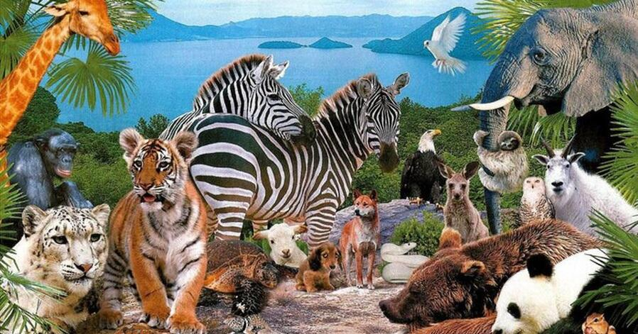

Природа навколо нас повна таємниць. Багато тварин мають здібності, які допомагають їм виживати в найважчих умовах, будувати складні стосунки у зграях або знаходити дорогу додому за тисячі кілометрів. На цьому сайті зібрані перевірені та захоплюючі факти про жителів суші та водних глибин.
